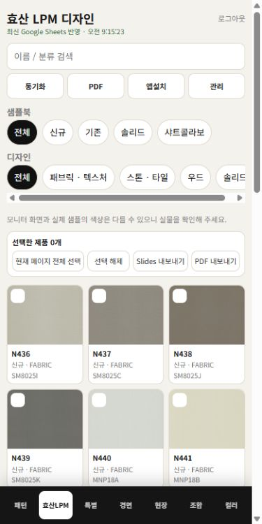
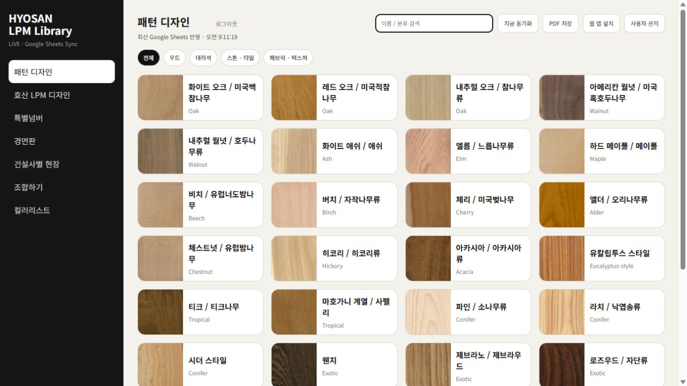
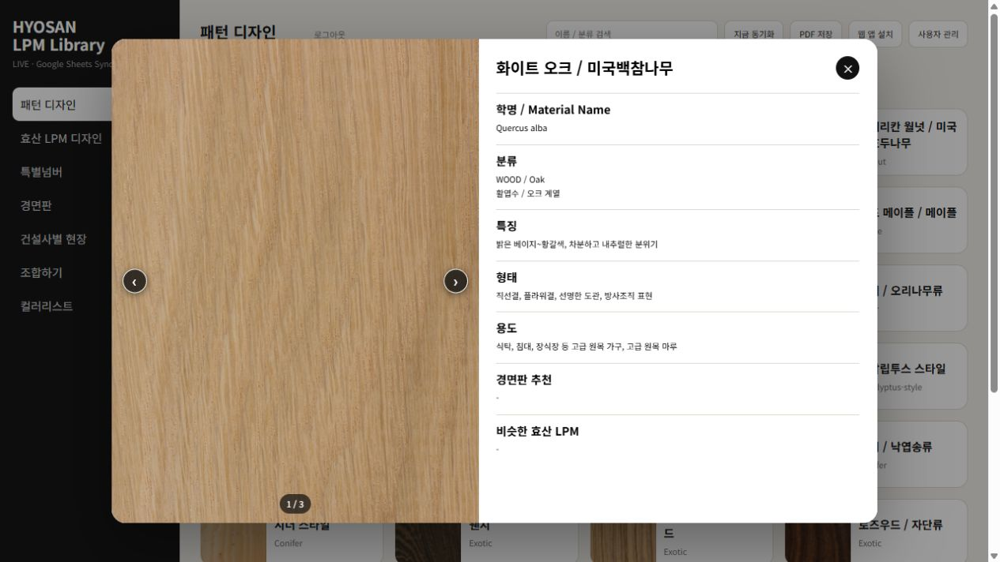

SCROLL TO OPEN↓
HYOSAN LPL ENCYCLOPEDIA
우리는 매일,
새로운 문을 엽니다.
거래처에서 다음 거래처로.
수많은 문을 두드리는 영업사원의 하루.
FIELD READY.가볍게 나가도,
PC에서도, 모바일에서도 같은 자료를 만납니다.
가볍게 나가도,
지식은 든든하게.
흩어진 자료가 필요할 때마다,
내부 직원에게 연락해 찾아달라고 해야 했습니다.
이제 모바일로 직접 찾아보고, 편하게 확인하세요.
01휴대폰 홈 화면에서 바로 열고
02제품과 패턴을 함께 확인하고
03필요한 자료를 현장에서 꺼내고
01 / SAMPLE BOOK
샘플북
02 / SPREADSHEET제품 정보
03 / DRIVE
↗
현장 자료9:41••• ▰

KNOWLEDGE, IN YOUR POCKET.
필요한 정보로,
바로 들어가세요.
INSIDE THE LIBRARY


실제 효산 앱 캡처 · 목록에서 상세 화면으로01 / 07
PATTERN DESIGN
소재를 이해하는 첫 번째 문.
목재부터 스톤, 패브릭까지. 패턴의 특징과 용도를 살펴보고, 관련 LPM과 추천 경면판으로 이어집니다.
BUILD. CONNECT. IMPROVE.자료를 넘어,
자료를 넘어,
일하는 방식으로.
단순히 온라인에 옮기는 것에서 끝나지 않고,
서로 연결하고 계속 쌓아갈 수 있도록.
▦ Google SheetsLIVE DATA → LIBRARY
PATTERN_DESIGN클릭해서 재생 · 1초마다
CONNECTED KNOWLEDGE01 → 02 → 03
패턴의 특징에서 관련 제품으로.눌러서 이어 보기 ↗
MADE FOR EVERYDAY USEPC + MOBILE
휴대폰 홈 화면에서, 자료실을 바로 엽니다.
A SINGLE SOURCE
흩어진 자료를 한곳으로.
샘플북, 엑셀, Google Drive에 따로 있던 자료를 Google Sheets 중심으로 정리했습니다. 같은 정보를 PC와 모바일에서 확인합니다.
SCROLL TO DISCOVER ↓
05 / THE NEXT DOORHYOSAN LPL ENCYCLOPEDIA